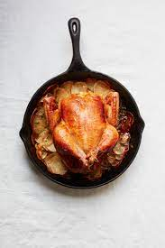

Mustard Baked Chicken

Description
This recipes is designed to make a meal for 3-4 adults. This recipe requires access to an oven. The chicken will be baked because this is among the healthiest ways of making chicken. Any mustard will do, but the recommendation is that you use dijon mustard.
Ingredients
- 2-3 raw chicken breasts
- 2/3 cups dijon mustard
- 1.5 tbs extra virgin olive oil
- salt and pepper to taste
Steps
- Cut chicken into 1 inch slices
- Drizzle in olive oil
- Put chicken in bowl and mix with dijon mustard
- Place in fridge and let marinate for ~30 minutes
- Preheat oven to 400 degrees Fahrenheit and cook for 18 minutes or until internal temp of 155 is reached